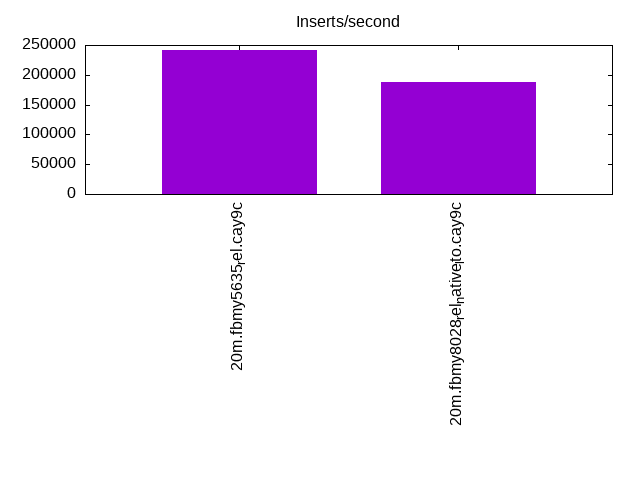
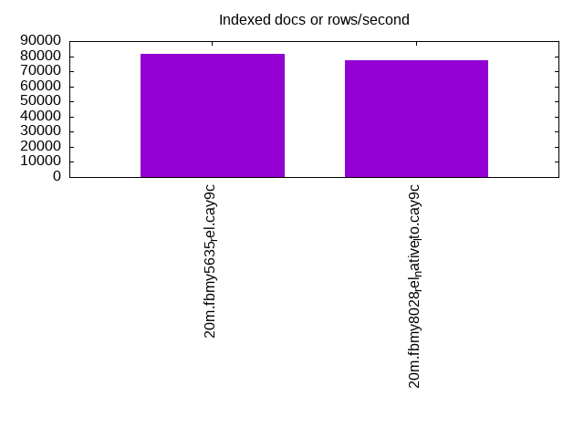
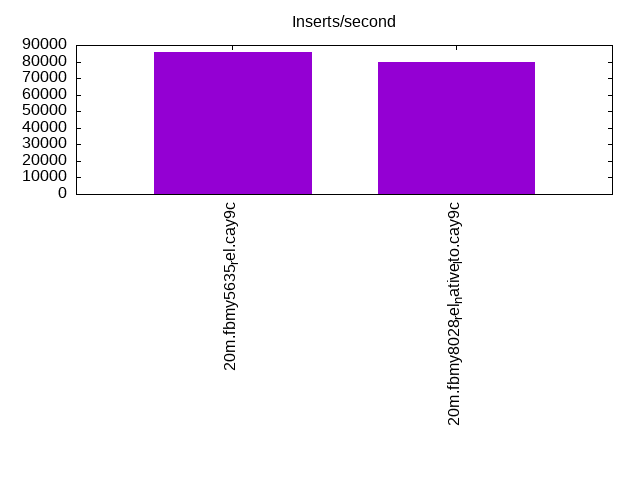
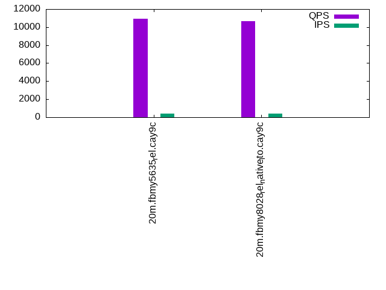
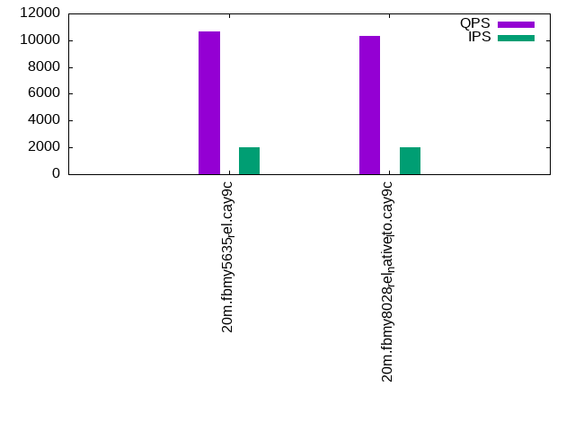
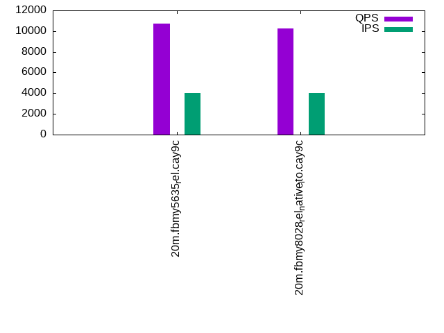

This is a report for the insert benchmark with 20M docs and 4 client(s). It is generated by scripts (bash, awk, sed) and Tufte might not be impressed. An overview of the insert benchmark is here and a short update is here. Below, by DBMS, I mean DBMS+version.config. An example is my8020.c10b40 where my means MySQL, 8020 is version 8.0.20 and c10b40 is the name for the configuration file.
The test server has 8 AMD cores, 16G RAM and an NVMe SSD. It is described here as the Beelink. The benchmark was run with 1 client and there were 1 or 2 connections per client (1 for queries, 1 for inserts). The benchmark loads 20M rows without secondary indexes, creates secondary indexes, loads another 20M rows then does 3 read+write tests for one hour each that do queries as fast as possible with 100, 500 and then 1000 writes/second/client concurrent with the queries. The database is cached by the storage engine and the only IO is for writes. Clients and the DBMS share one server. The per-database configs are in the per-database subdirectories here.
The tested DBMS are:
The numbers are inserts/s for l.i0 and l.i1, indexed docs (or rows) /s for l.x and queries/s for q*.2. The values are the average rate over the entire test for inserts (IPS) and queries (QPS). The range of values for IPS and QPS is split into 3 parts: bottom 25%, middle 50%, top 25%. Values in the bottom 25% have a red background, values in the top 25% have a green background and values in the middle have no color. A gray background is used for values that can be ignored because the DBMS did not sustain the target insert rate. Red backgrounds are not used when the minimum value is within 80% of the max value.
| dbms | l.i0 | l.x | l.i1 | q100.1 | q500.1 | q1000.1 |
|---|---|---|---|---|---|---|
| 20m.fbmy5635_rel.cay9c | 240964 | 81707 | 85837 | 10930 | 10634 | 10739 |
| 20m.fbmy8028_rel_native_lto.cay9c | 188679 | 77606 | 80000 | 10654 | 10307 | 10240 |
This lists the average rate of inserts/s for the tests that do inserts concurrent with queries. For such tests the query rate is listed in the table above. The read+write tests are setup so that the insert rate should match the target rate every second. Cells that are not at least 95% of the target have a red background to indicate a failure to satisfy the target.
| dbms | q100.1 | q500.1 | q1000.1 |
|---|---|---|---|
| fbmy5635_rel.cay9c | 399 | 1994 | 3989 |
| fbmy8028_rel_native_lto.cay9c | 399 | 1994 | 3989 |
| target | 400 | 2000 | 4000 |
l.i0: load without secondary indexes. Graphs for performance per 1-second interval are here.
Average throughput:
Insert response time histogram: each cell has the percentage of responses that take <= the time in the header and max is the max response time in seconds. For the max column values in the top 25% of the range have a red background and in the bottom 25% of the range have a green background. The red background is not used when the min value is within 80% of the max value.
| dbms | 256us | 1ms | 4ms | 16ms | 64ms | 256ms | 1s | 4s | 16s | gt | max |
|---|---|---|---|---|---|---|---|---|---|---|---|
| fbmy5635_rel.cay9c | 99.761 | 0.224 | 0.002 | 0.013 | 0.106 | ||||||
| fbmy8028_rel_native_lto.cay9c | 99.369 | 0.450 | 0.168 | 0.013 | 0.119 |
Performance metrics for the DBMS listed above. Some are normalized by throughput, others are not. Legend for results is here.
ips qps rps rmbps wps wmbps rpq rkbpq wpi wkbpi csps cpups cspq cpupq dbgb1 dbgb2 rss maxop p50 p99 tag 240964 0 0 0.0 121.9 51.3 0.000 0.000 0.001 0.218 22570 73.2 0.094 24 0.7 1.8 0.3 0.106 70823 41355 20m.fbmy5635_rel.cay9c 188679 0 0 0.0 102.8 39.1 0.000 0.000 0.001 0.212 18364 68.2 0.097 29 0.7 2.0 0.7 0.119 53542 4595 20m.fbmy8028_rel_native_lto.cay9c
l.x: create secondary indexes.
Average throughput:
Performance metrics for the DBMS listed above. Some are normalized by throughput, others are not. Legend for results is here.
ips qps rps rmbps wps wmbps rpq rkbpq wpi wkbpi csps cpups cspq cpupq dbgb1 dbgb2 rss maxop p50 p99 tag 81707 0 0 0.0 32.2 12.6 0.000 0.000 0.000 0.158 228 12.7 0.003 12 1.4 2.4 1.3 0.007 NA NA 20m.fbmy5635_rel.cay9c 77606 0 0 0.0 29.9 11.7 0.000 0.000 0.000 0.154 367 12.8 0.005 13 1.4 2.6 1.9 0.008 NA NA 20m.fbmy8028_rel_native_lto.cay9c
l.i1: continue load after secondary indexes created. Graphs for performance per 1-second interval are here.
Average throughput:
Insert response time histogram: each cell has the percentage of responses that take <= the time in the header and max is the max response time in seconds. For the max column values in the top 25% of the range have a red background and in the bottom 25% of the range have a green background. The red background is not used when the min value is within 80% of the max value.
| dbms | 256us | 1ms | 4ms | 16ms | 64ms | 256ms | 1s | 4s | 16s | gt | max |
|---|---|---|---|---|---|---|---|---|---|---|---|
| fbmy5635_rel.cay9c | 99.626 | 0.363 | 0.006 | 0.005 | 0.110 | ||||||
| fbmy8028_rel_native_lto.cay9c | 99.085 | 0.798 | 0.111 | 0.006 | 0.135 |
Performance metrics for the DBMS listed above. Some are normalized by throughput, others are not. Legend for results is here.
ips qps rps rmbps wps wmbps rpq rkbpq wpi wkbpi csps cpups cspq cpupq dbgb1 dbgb2 rss maxop p50 p99 tag 85837 0 3 0.4 155.6 64.5 0.000 0.005 0.002 0.770 19872 69.1 0.232 64 5.2 6.9 1.9 0.110 21826 15383 20m.fbmy5635_rel.cay9c 80000 0 12 1.6 150.7 60.4 0.000 0.020 0.002 0.773 17882 70.8 0.224 71 3.5 5.4 2.6 0.135 20427 14840 20m.fbmy8028_rel_native_lto.cay9c
q100.1: range queries with 100 insert/s per client. Graphs for performance per 1-second interval are here.
Average throughput:
Query response time histogram: each cell has the percentage of responses that take <= the time in the header and max is the max response time in seconds. For max values in the top 25% of the range have a red background and in the bottom 25% of the range have a green background. The red background is not used when the min value is within 80% of the max value.
| dbms | 256us | 1ms | 4ms | 16ms | 64ms | 256ms | 1s | 4s | 16s | gt | max |
|---|---|---|---|---|---|---|---|---|---|---|---|
| fbmy5635_rel.cay9c | 12.678 | 87.313 | 0.008 | 0.001 | nonzero | 0.041 | |||||
| fbmy8028_rel_native_lto.cay9c | 11.576 | 88.409 | 0.015 | nonzero | 0.009 |
Insert response time histogram: each cell has the percentage of responses that take <= the time in the header and max is the max response time in seconds. For max values in the top 25% of the range have a red background and in the bottom 25% of the range have a green background. The red background is not used when the min value is within 80% of the max value.
| dbms | 256us | 1ms | 4ms | 16ms | 64ms | 256ms | 1s | 4s | 16s | gt | max |
|---|---|---|---|---|---|---|---|---|---|---|---|
| fbmy5635_rel.cay9c | 99.764 | 0.236 | 0.008 | ||||||||
| fbmy8028_rel_native_lto.cay9c | 99.535 | 0.424 | 0.042 | 0.022 |
Performance metrics for the DBMS listed above. Some are normalized by throughput, others are not. Legend for results is here.
ips qps rps rmbps wps wmbps rpq rkbpq wpi wkbpi csps cpups cspq cpupq dbgb1 dbgb2 rss maxop p50 p99 tag 399 10930 33 0.3 7.2 1.8 0.003 0.033 0.018 4.736 41130 50.7 3.763 371 2.8 4.6 5.9 0.041 2749 2333 20m.fbmy5635_rel.cay9c 399 10654 8 0.2 6.5 1.5 0.001 0.018 0.016 3.812 40398 51.1 3.792 384 2.8 4.9 5.8 0.009 2653 2142 20m.fbmy8028_rel_native_lto.cay9c
q500.1: range queries with 500 insert/s per client. Graphs for performance per 1-second interval are here.
Average throughput:
Query response time histogram: each cell has the percentage of responses that take <= the time in the header and max is the max response time in seconds. For max values in the top 25% of the range have a red background and in the bottom 25% of the range have a green background. The red background is not used when the min value is within 80% of the max value.
| dbms | 256us | 1ms | 4ms | 16ms | 64ms | 256ms | 1s | 4s | 16s | gt | max |
|---|---|---|---|---|---|---|---|---|---|---|---|
| fbmy5635_rel.cay9c | 10.086 | 89.865 | 0.046 | 0.002 | nonzero | 0.037 | |||||
| fbmy8028_rel_native_lto.cay9c | 6.084 | 93.834 | 0.078 | 0.005 | nonzero | 0.016 |
Insert response time histogram: each cell has the percentage of responses that take <= the time in the header and max is the max response time in seconds. For max values in the top 25% of the range have a red background and in the bottom 25% of the range have a green background. The red background is not used when the min value is within 80% of the max value.
| dbms | 256us | 1ms | 4ms | 16ms | 64ms | 256ms | 1s | 4s | 16s | gt | max |
|---|---|---|---|---|---|---|---|---|---|---|---|
| fbmy5635_rel.cay9c | 95.989 | 3.986 | 0.025 | 0.048 | |||||||
| fbmy8028_rel_native_lto.cay9c | 95.583 | 4.318 | 0.099 | 0.063 |
Performance metrics for the DBMS listed above. Some are normalized by throughput, others are not. Legend for results is here.
ips qps rps rmbps wps wmbps rpq rkbpq wpi wkbpi csps cpups cspq cpupq dbgb1 dbgb2 rss maxop p50 p99 tag 1994 10634 0 0.0 6.6 1.7 0.000 0.000 0.003 0.859 39995 51.1 3.761 384 3.2 3.5 7.7 0.037 2637 2350 20m.fbmy5635_rel.cay9c 1994 10307 0 0.0 6.9 1.7 0.000 0.000 0.003 0.864 39095 51.5 3.793 400 3.2 3.6 7.6 0.016 2590 2126 20m.fbmy8028_rel_native_lto.cay9c
q1000.1: range queries with 1000 insert/s per client. Graphs for performance per 1-second interval are here.
Average throughput:
Query response time histogram: each cell has the percentage of responses that take <= the time in the header and max is the max response time in seconds. For max values in the top 25% of the range have a red background and in the bottom 25% of the range have a green background. The red background is not used when the min value is within 80% of the max value.
| dbms | 256us | 1ms | 4ms | 16ms | 64ms | 256ms | 1s | 4s | 16s | gt | max |
|---|---|---|---|---|---|---|---|---|---|---|---|
| fbmy5635_rel.cay9c | 8.616 | 91.266 | 0.112 | 0.006 | nonzero | 0.020 | |||||
| fbmy8028_rel_native_lto.cay9c | 4.209 | 95.621 | 0.160 | 0.009 | nonzero | 0.029 |
Insert response time histogram: each cell has the percentage of responses that take <= the time in the header and max is the max response time in seconds. For max values in the top 25% of the range have a red background and in the bottom 25% of the range have a green background. The red background is not used when the min value is within 80% of the max value.
| dbms | 256us | 1ms | 4ms | 16ms | 64ms | 256ms | 1s | 4s | 16s | gt | max |
|---|---|---|---|---|---|---|---|---|---|---|---|
| fbmy5635_rel.cay9c | 90.794 | 9.166 | 0.037 | 0.002 | 0.069 | ||||||
| fbmy8028_rel_native_lto.cay9c | 96.306 | 3.590 | 0.103 | 0.001 | 0.068 |
Performance metrics for the DBMS listed above. Some are normalized by throughput, others are not. Legend for results is here.
ips qps rps rmbps wps wmbps rpq rkbpq wpi wkbpi csps cpups cspq cpupq dbgb1 dbgb2 rss maxop p50 p99 tag 3989 10739 10 0.3 15.6 4.9 0.001 0.030 0.004 1.262 39532 53.3 3.681 397 3.7 4.9 10.6 0.020 2669 2317 20m.fbmy5635_rel.cay9c 3989 10240 7 0.5 15.1 4.6 0.001 0.046 0.004 1.192 38425 53.6 3.753 419 3.7 5.1 11.0 0.029 2557 2110 20m.fbmy8028_rel_native_lto.cay9c
l.i0: load without secondary indexes
Performance metrics for all DBMS, not just the ones listed above. Some are normalized by throughput, others are not. Legend for results is here.
ips qps rps rmbps wps wmbps rpq rkbpq wpi wkbpi csps cpups cspq cpupq dbgb1 dbgb2 rss maxop p50 p99 tag 240964 0 0 0.0 121.9 51.3 0.000 0.000 0.001 0.218 22570 73.2 0.094 24 0.7 1.8 0.3 0.106 70823 41355 20m.fbmy5635_rel.cay9c 188679 0 0 0.0 102.8 39.1 0.000 0.000 0.001 0.212 18364 68.2 0.097 29 0.7 2.0 0.7 0.119 53542 4595 20m.fbmy8028_rel_native_lto.cay9c
l.x: create secondary indexes
Performance metrics for all DBMS, not just the ones listed above. Some are normalized by throughput, others are not. Legend for results is here.
ips qps rps rmbps wps wmbps rpq rkbpq wpi wkbpi csps cpups cspq cpupq dbgb1 dbgb2 rss maxop p50 p99 tag 81707 0 0 0.0 32.2 12.6 0.000 0.000 0.000 0.158 228 12.7 0.003 12 1.4 2.4 1.3 0.007 NA NA 20m.fbmy5635_rel.cay9c 77606 0 0 0.0 29.9 11.7 0.000 0.000 0.000 0.154 367 12.8 0.005 13 1.4 2.6 1.9 0.008 NA NA 20m.fbmy8028_rel_native_lto.cay9c
l.i1: continue load after secondary indexes created
Performance metrics for all DBMS, not just the ones listed above. Some are normalized by throughput, others are not. Legend for results is here.
ips qps rps rmbps wps wmbps rpq rkbpq wpi wkbpi csps cpups cspq cpupq dbgb1 dbgb2 rss maxop p50 p99 tag 85837 0 3 0.4 155.6 64.5 0.000 0.005 0.002 0.770 19872 69.1 0.232 64 5.2 6.9 1.9 0.110 21826 15383 20m.fbmy5635_rel.cay9c 80000 0 12 1.6 150.7 60.4 0.000 0.020 0.002 0.773 17882 70.8 0.224 71 3.5 5.4 2.6 0.135 20427 14840 20m.fbmy8028_rel_native_lto.cay9c
q100.1: range queries with 100 insert/s per client
Performance metrics for all DBMS, not just the ones listed above. Some are normalized by throughput, others are not. Legend for results is here.
ips qps rps rmbps wps wmbps rpq rkbpq wpi wkbpi csps cpups cspq cpupq dbgb1 dbgb2 rss maxop p50 p99 tag 399 10930 33 0.3 7.2 1.8 0.003 0.033 0.018 4.736 41130 50.7 3.763 371 2.8 4.6 5.9 0.041 2749 2333 20m.fbmy5635_rel.cay9c 399 10654 8 0.2 6.5 1.5 0.001 0.018 0.016 3.812 40398 51.1 3.792 384 2.8 4.9 5.8 0.009 2653 2142 20m.fbmy8028_rel_native_lto.cay9c
q500.1: range queries with 500 insert/s per client
Performance metrics for all DBMS, not just the ones listed above. Some are normalized by throughput, others are not. Legend for results is here.
ips qps rps rmbps wps wmbps rpq rkbpq wpi wkbpi csps cpups cspq cpupq dbgb1 dbgb2 rss maxop p50 p99 tag 1994 10634 0 0.0 6.6 1.7 0.000 0.000 0.003 0.859 39995 51.1 3.761 384 3.2 3.5 7.7 0.037 2637 2350 20m.fbmy5635_rel.cay9c 1994 10307 0 0.0 6.9 1.7 0.000 0.000 0.003 0.864 39095 51.5 3.793 400 3.2 3.6 7.6 0.016 2590 2126 20m.fbmy8028_rel_native_lto.cay9c
q1000.1: range queries with 1000 insert/s per client
Performance metrics for all DBMS, not just the ones listed above. Some are normalized by throughput, others are not. Legend for results is here.
ips qps rps rmbps wps wmbps rpq rkbpq wpi wkbpi csps cpups cspq cpupq dbgb1 dbgb2 rss maxop p50 p99 tag 3989 10739 10 0.3 15.6 4.9 0.001 0.030 0.004 1.262 39532 53.3 3.681 397 3.7 4.9 10.6 0.020 2669 2317 20m.fbmy5635_rel.cay9c 3989 10240 7 0.5 15.1 4.6 0.001 0.046 0.004 1.192 38425 53.6 3.753 419 3.7 5.1 11.0 0.029 2557 2110 20m.fbmy8028_rel_native_lto.cay9c
Insert response time histogram
256us 1ms 4ms 16ms 64ms 256ms 1s 4s 16s gt max tag 0.000 0.000 99.761 0.224 0.002 0.013 0.000 0.000 0.000 0.000 0.106 fbmy5635_rel.cay9c 0.000 0.000 99.369 0.450 0.168 0.013 0.000 0.000 0.000 0.000 0.119 fbmy8028_rel_native_lto.cay9c
TODO - determine whether there is data for create index response time
Insert response time histogram
256us 1ms 4ms 16ms 64ms 256ms 1s 4s 16s gt max tag 0.000 0.000 99.626 0.363 0.006 0.005 0.000 0.000 0.000 0.000 0.110 fbmy5635_rel.cay9c 0.000 0.000 99.085 0.798 0.111 0.006 0.000 0.000 0.000 0.000 0.135 fbmy8028_rel_native_lto.cay9c
Query response time histogram
256us 1ms 4ms 16ms 64ms 256ms 1s 4s 16s gt max tag 12.678 87.313 0.008 0.001 nonzero 0.000 0.000 0.000 0.000 0.000 0.041 fbmy5635_rel.cay9c 11.576 88.409 0.015 nonzero 0.000 0.000 0.000 0.000 0.000 0.000 0.009 fbmy8028_rel_native_lto.cay9c
Insert response time histogram
256us 1ms 4ms 16ms 64ms 256ms 1s 4s 16s gt max tag 0.000 0.000 99.764 0.236 0.000 0.000 0.000 0.000 0.000 0.000 0.008 fbmy5635_rel.cay9c 0.000 0.000 99.535 0.424 0.042 0.000 0.000 0.000 0.000 0.000 0.022 fbmy8028_rel_native_lto.cay9c
Query response time histogram
256us 1ms 4ms 16ms 64ms 256ms 1s 4s 16s gt max tag 10.086 89.865 0.046 0.002 nonzero 0.000 0.000 0.000 0.000 0.000 0.037 fbmy5635_rel.cay9c 6.084 93.834 0.078 0.005 nonzero 0.000 0.000 0.000 0.000 0.000 0.016 fbmy8028_rel_native_lto.cay9c
Insert response time histogram
256us 1ms 4ms 16ms 64ms 256ms 1s 4s 16s gt max tag 0.000 0.000 95.989 3.986 0.025 0.000 0.000 0.000 0.000 0.000 0.048 fbmy5635_rel.cay9c 0.000 0.000 95.583 4.318 0.099 0.000 0.000 0.000 0.000 0.000 0.063 fbmy8028_rel_native_lto.cay9c
Query response time histogram
256us 1ms 4ms 16ms 64ms 256ms 1s 4s 16s gt max tag 8.616 91.266 0.112 0.006 nonzero 0.000 0.000 0.000 0.000 0.000 0.020 fbmy5635_rel.cay9c 4.209 95.621 0.160 0.009 nonzero 0.000 0.000 0.000 0.000 0.000 0.029 fbmy8028_rel_native_lto.cay9c
Insert response time histogram
256us 1ms 4ms 16ms 64ms 256ms 1s 4s 16s gt max tag 0.000 0.000 90.794 9.166 0.037 0.002 0.000 0.000 0.000 0.000 0.069 fbmy5635_rel.cay9c 0.000 0.000 96.306 3.590 0.103 0.001 0.000 0.000 0.000 0.000 0.068 fbmy8028_rel_native_lto.cay9c